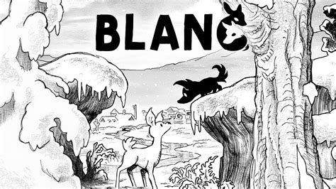
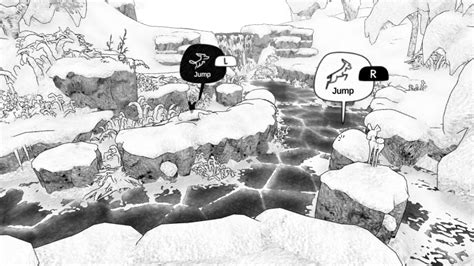
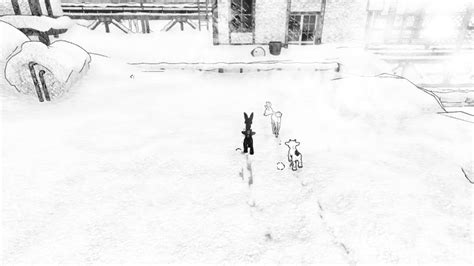

STEAM CLEAN REVIEW
Blanc
7.5/10
Blanc is a short but beautiful co-op adventure where a young wolf and deer search for their families.
Quick Facts
- Completed: 04/10/2026
- Hours Played Overall: 3.5 Hours
- Achievement Progress: 12/13
- Steam Clean Size: QUICK
- Genre: Co-Op Adventure Puzzle Game
Should You Play In 2026?
Blanc tells the story of a young wolf and a young deer who become separated from their families during a harsh winter. Despite being natural opposites, the pair must learn to work together as they cross a snow-covered landscape in search of home. It's a simple premise, but one that manages to be surprisingly touching without ever needing pages of dialogue to get its point across.
I absolutely loved my time with Blanc. It's one of those games that feels completely comfortable being exactly what it is. Rather than chasing huge set pieces or complicated mechanics, it focuses on creating a relaxing and heartfelt adventure. The result is a game that feels warm and uplifting despite being set in a frozen wilderness.
The gameplay is intentionally simple and revolves around cooperation and environmental puzzles. I played the entire game solo, which initially felt a little strange considering Blanc is fundamentally designed around co-op play. Thankfully, the controls quickly became second nature and the game does a great job of making solo play feel natural. The puzzles never become overly taxing, but they remain engaging throughout and help keep the journey moving at a pleasant pace.
Presentation is where Blanc truly shines. The hand-drawn black-and-white art style is absolutely gorgeous and gives the game a unique identity from the moment it starts. Every animation feels full of personality, particularly the interactions between the wolf and deer. There were countless moments where their body language alone communicated more emotion than words ever could. Put simply, the game feels like it has a soul.
The music deserves equal praise. It's understated, calm and beautifully composed, perfectly complementing the quiet atmosphere of the adventure. Combined with the visual design, it creates an experience that I found incredibly relaxing from start to finish.
Performance was flawless during my playthrough. I encountered no technical issues and the game ran smoothly throughout. My only real criticism is that Blanc ends just as it feels like it's hitting its stride. I would have happily spent another couple of hours in this world. There were also one or two moments where the next objective wasn't immediately obvious, resulting in a little trial and error.
Despite its short runtime, I would absolutely recommend Blanc in 2026. It's a lovely adventure with a beautiful story, memorable presentation and charming cooperative design. I can easily see myself replaying it in the future, and the ending left a bigger emotional impact than I expected from such a small game.

What I Loved
- The beautiful hand-drawn art style and presentation.
- A sweet and surprisingly touching story.
- The interactions between the wolf and deer, which add constant charm.
- Sliding around the snowy environments is far more fun than it has any right to be.
What Didn't Work
- The adventure is perhaps a little too short.
- Some objectives aren't always immediately clear.
Favourite Moment
The ending. It was surprisingly beautiful and delivered an emotional payoff that perfectly wrapped up the journey.
Favourite Boss / Character
Both of the main characters. The wolf and deer are incredibly endearing, and their growing friendship is the heart of the entire game.
Who Would Enjoy This?
Fans of narrative-driven puzzle games will find a lot to love here. Blanc is also an excellent choice for players looking for a relaxing experience, couples searching for a co-op adventure, or anyone who appreciates distinctive art styles and emotionally driven storytelling.

Steam Clean Verdict
✅ RECOMMENDED
Blanc is proof that a game doesn't need to be long or complicated to leave an impression. Its beautiful presentation, charming characters and heartfelt journey combine to create a memorable experience that stayed with me long after the credits rolled. It may be brief, but it's an adventure well worth taking.